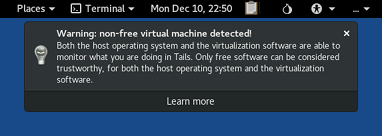

Cette version corrige de nombreuses failles de sécurité.
Vous devez mettre à jour dès que possible.
Changements
Mises à jour et changements
Ajout d'une fenêtre de confirmation entre le téléchargement et l'application de la mise à jour automatique, cela permet de mieux contrôler quand le réseau est désactivé et d'éviter des mises à jour partielles. (#14754 et #15282)

Lors de l'utilisation dans une machine virtuelle, alerter à propos de la fiabilité du système d'exploitation même lorsque le logiciel de virtualisation est libre. (#16195)

Désactivation de Autocrypt dans Thunderbird pour éviter l'envoi par erreur de courriers électroniques non chiffrés. (#15923)
Mise à jour de Linux vers la version 4.18.20.
Mise à jour du navigateur Tor vers la version 8.0.4.
Mise à jour de Thunderbird vers la version 60.3.0.
Problèmes corrigés
Correction de l'ouverture de Thunderbird dans une langue autre que l'anglais. (#16113)
Réduction du niveau de journalisation de Tor lors de l'utilisation de bridges. (#15743)
Pour plus de détails, lisez notre liste des changements.
Problèmes connus
Tails n'arrive pas à démarrer et affiche un écran noir avec certaines cartes graphiques Intel.
Pour corriger ce problème, ajoutez
nomodesetaux options de démarrage.Si cette solution ne marche pas, ajoutez
nomodeset xorg-driver=vesaaux options de démarrage.Si cette solution ne marche pas, merci de nous rapporter à tails-support-private@boum.org :
- La marque et le modèle de votre ordinateur.
- Le contournement que vous avez essayé et qui a échoué.
- Si possible, le résultat de la commande
lspci -nexécutée depuis un autre système Linux, par exemple une ancienne Tails.
Voir la liste des problèmes connus de longue date.
Obtenir Tails 3.11
Pour l'installer, suivez nos instructions d'installation.
Pour mettre à jour, des mises à jour automatiques sont disponibles depuis les versions 3.9 et 3.10.1 vers la version 3.11.
Si vous ne pouvez pas faire une mise à jour automatique ou si le démarrage échoue après une mise à jour automatique, merci d'essayer de faire une mise à jour manuelle.
Et ensuite ?
Tails 3.12 est prévu pour le 29 janvier.
Jetez un œil à notre feuille de route pour savoir ce que nous avons en tête.
Nous avons besoin de votre aide et il y a de nombreuses manières de contribuer à Tails (faire un don est seulement l'une d'entre elles). Venez discuter avec nous !